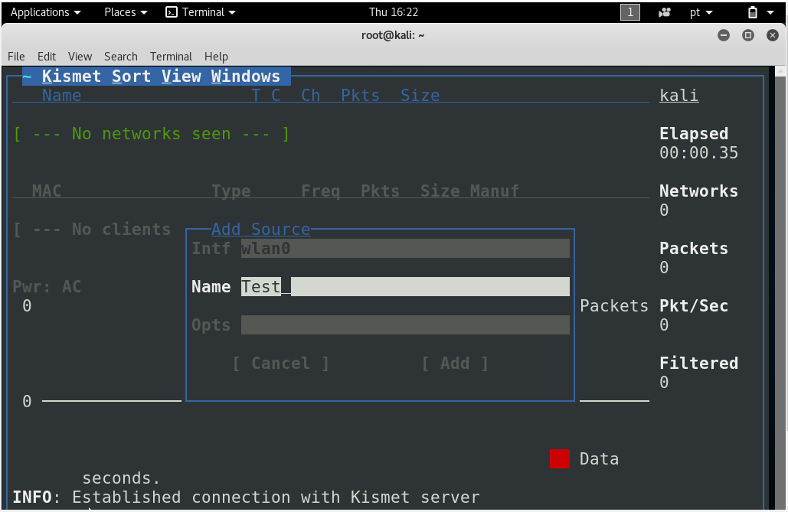

continuar a escrever
Introdução
É uma ferramenta poderosa, que pode ser usada tanto para checar a segurança de sua própria rede wireless quanto para checar a presença de outras redes próximas e, assim, descobrir os canais que estão mais congestionados (de forma a configurar sua rede para usar um que esteja livre) ou, até mesmo, invadir redes. O Kismet em si não impõe restrições ao que você pode fazer. Assim como qualquer outra ferramenta, ele pode ser usado de forma produtiva ou destrutiva, de acordo com a índole de quem usa.
Uma observação é que o Kismet por si não faz ataques ou defende você de invasores, ele é uma ferramenta para gerar dados e então poder ser usado por outros softwares de forma defensiva ou ofensiva, ele é so um Sniffer.
Sniffers
Os Sniffers capturam pacotes de rede colocando a interface de rede Ethernet/Wireless, em modo passivo. No caso de redes locais Ethernet os dados trafegam de uma máquina a outra por meio do cabo em pequenas unidades chamadas frames. Esses frames são divididos em seções que carregam informações específicas. Os Sniffers mesmo não sendo direcionado como receptor dessa mensagem interceptam ela e vão procurar ler o dado. No caso da rede Wireless é um pouco diferente já que teria que existir alguém pra fazer o link dos receptores e dos despachadores da informação, porem ambas impõem um risco de segurança.
Plataformas
Originalmente desenvolvido para uso em plataformas Linux, hoje já é compatível com OSX. No caso do Windows a plataforma não tem compatibilidade direta, para funcionar devera ser utilizado por intermédio do Cygwin ( Cygwin.com ) para poder executar corretamente os comandos no terminal.
Nos exemplos usados nesta pagina será utilizado a versão que já vem instalada no Kali Linux (para mais informações sobre o Kali Linux acesse: kalinePage).
Vantagens
O Kismet é um software open source continuamente em desenvolvimento, esta é sua principal vantagem, a comunidade vai, conforme a necessidade, evoluir e adaptar o software, e além disso o Kismet ganhou seu nome como sendo um dos primeiros a de forma trivial para o usuário fazer uma ponte mostrando uma conexão entre os hosts e os clients na ferramenta, ou seja, nesta aplicação se você localizar o host você consegue ver seus clientes ativos, o que facilita no controle da rede ou buscar informações diretas para atacar tal maquina.
Tutorial
Ao abrir o Kismet será perguntado se deseja inicializar o servidor do Kismet , caso contrario irá seguir para as configurações manuais. Iremos configurar manualmente.

Na proxima etapa somente precisara se preocupar com o nome que sera dado as extensões dos dados gerados e se deseja começar vendo o console ao iniciar. Optaremos por nome Kismet e não mostrar o console.
Caso tenha uma interface wireless automaticamente configurada o Kismet irá se iniciar, caso contrario ele irá avisar que não existe interface para inicializar e perguntará se deseja por alguma.
Colocaremos a entrada da interface wireless na primeira opção sendo "wlan0" ( caso não saiba se tem ou não saiba o nome, basta no terminal digitar ifconfig, caso do linux, e verificar o nome da interface wireless disponível). E alem disso colocaremos um nome para essa interface "Test".

Pronto, Kismet já esta em ação, ele está verificando todas as redes wireless disponíveis na sua área de alcance
Ao adentrarmos em qualquer uma das redes podemos conseguir informações sobre ela , como mostrado na imagem
E se clicarmos em View->Clientes poderemos ver todos os clientes que estão conectados nesta rede

Podemos sobre esses clientes adicionar notas, para poder por exemplo fazer um cadastro de maquinas que estão aptas a usar a rede, caso seja encontrado uma maquina não cadastrada fazer algo a respeito da segurança.

Se nos aprofundarmos em um cliente especifico poderemos ver o trafego de dados e a distancia dele com sua maquina por meio do sinal

E ao sair do Kismet, finalizando o background O Kismet ira mostrar os dados gerados, por exemplo o arquivo "pcap" Na pasta onde foi salvo o arquivo, você pode abrilo e fazer uma leitura mais aprofundada dos dados gerados por outro software capaz para isso
Links
Site -> https://www.kismetwireless.net Documentação -> https://www.kismetwireless.net/documentation.shtml Outra Ferramenta do Kali Linux -> BrunoBarrosPage